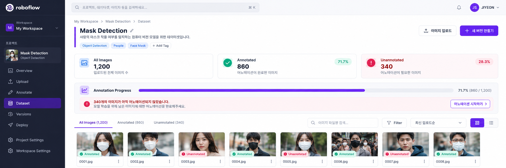
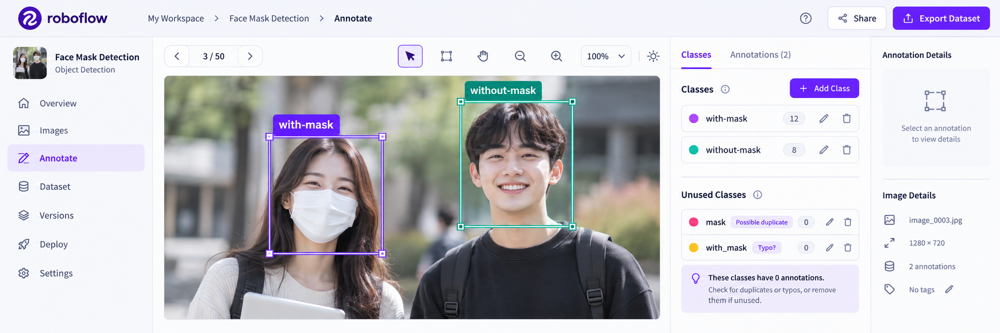
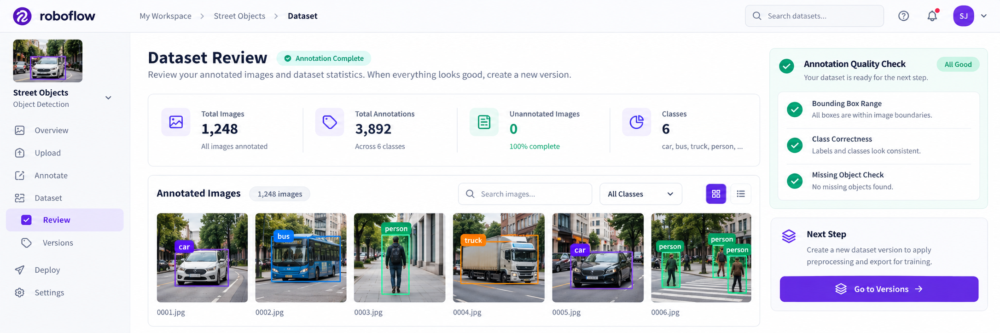

ROBOFLOW · COMPUTER VISION DATASET
Dataset Pipeline · Coverage & Quality Review
Roboflow 05. Dataset 관리
Annotated · Unannotated · Class 관리 · 잘못된 Annotation 확인
Dataset 관리는 단순히 모든 Image에 Annotation이 존재하는지만 확인하는 단계가 아닙니다. Annotated와 Unannotated 상태를 통해 작업 Coverage를 확인하고, Bounding Box 범위, Class 정확성, 객체 누락, Class 이름 일관성을 검토하여 현재 상태를 Dataset Version으로 만들어도 되는지 판단합니다.
학습 목표
-
01
Annotated와 Unannotated의 의미를 구분한다.
-
02
Annotation Coverage와 Annotation Quality를 구분한다.
-
03
Unannotated = 0이 의미하는 것과 의미하지 않는 것을 설명한다.
-
04
Classes Panel에서 Class 이름과 중복·오타 가능성을 확인한다.
-
05
잘못된 Bounding Box, 잘못된 Class, 객체 누락을 구분한다.
-
06
Dataset 관리 결과가 YOLO labels와 data.yaml에 어떻게 연결되는지 설명한다.
-
07
Train / Valid / Test의 Annotation 오류가 각각 어떤 문제를 만드는지 설명한다.
-
08
검수된 Dataset을 Versions 단계로 넘길 수 있는 완료 조건을 정리한다.
교안 직접 흐름: Classes / Unused Classes 관련 화면 → Annotated / Unannotated 상태 확인 → Unannotated = 0 → Versions 이동
01 · LESSON GOAL
Annotation Dataset을 Version 준비 상태로 만들기
이번 단원의 결과는 새로운 Bounding Box를 처음 만드는 것이 아니라, 이미 작성한 Annotation의 상태를 확인하고 Dataset Version을 생성해도 되는지 판단하는 것입니다.
Annotation 작업 중
- Annotated: 일부
- Unannotated: 남아 있음
- Class 일관성: 미확인
- Bounding Box 품질: 미확인
Version 준비
- Unannotated: 0
- Class 목록: 확인
- Bounding Box: 검수
- 객체 누락: 확인
“모두 작업했는가?”와 “올바르게 작업했는가?”를 서로 다른 기준으로 확인합니다.
02 · PIPELINE POSITION
Roboflow 전체 Workflow에서의 위치
03 · CORE CONCEPTS
Dataset 관리 핵심 용어
| 용어 | 의미 | 확인 질문 |
|---|---|---|
| Dataset | Image와 Annotation을 포함한 학습 데이터 묶음 | 학습에 사용할 준비가 되었는가? |
| Annotated | Annotation 작업이 존재하는 Image 상태 | 작업된 Image는 몇 개인가? |
| Unannotated | Annotation 작업이 남은 Image 상태 | 아직 몇 장을 작업해야 하는가? |
| Coverage | 작업 누락 없이 전체 데이터가 처리되었는지 확인 | 모두 작업했는가? |
| Quality | Box와 Class가 정확한지 확인 | 올바르게 작업했는가? |
| Class | Dataset이 구분하는 객체 Category | 어떤 종류를 탐지하는가? |
| Label | 특정 Box에 실제로 지정한 Class | 이 객체에 어떤 Class가 연결됐는가? |
| Bounding Box | 객체의 위치와 범위를 나타내는 사각형 | 객체를 정확히 포함하는가? |
| Unused Classes | 화면에 보이는 미사용 Class 관련 상태 영역 | 실수로 만든 Class가 있는가? |
| Version Ready | 현재 Dataset을 Version으로 만들 준비가 된 상태 | 이 상태를 고정해도 되는가? |
Dataset 관리
=
Coverage 확인
+
Quality 확인
04 · VISUAL UNDERSTANDING
완료 상태와 정확한 상태는 다르다
모두 작업했는가?
Annotated / Unannotated 상태로 작업 누락을 확인합니다.
올바르게 작업했는가?
Box 범위, Class 정확성, 객체 누락을 확인합니다.
Annotated 상태라고 해서 Bounding Box와 Class가 정확하다고 자동으로 판단할 수는 없습니다.
05 · SCREEN WALKTHROUGH
교안 화면 따라하기
화면을 단순히 보는 데서 끝내지 않고, 어떤 상태를 확인하는가 → 왜 필요한가 → Dataset이 다음 단계로 갈 수 있는가 를 함께 해석합니다.

Annotated / Unannotated 확인
- 어디를 확인?
- Annotate 영역의 Annotated / Unannotated 상태
- 왜?
- 작업이 남은 Image를 찾기 위해
- 해석
- Unannotated > 0이면 Annotation 작업이 남아 있음
- 완료 상태
- Unannotated = 0

Classes / Unused Classes 확인
- 어디를 확인?
- Annotation Editor의 Classes Panel
- 확인 항목
- Class 이름, 중복, 오타, Box와 Class 연결
- 주의
- Class 삭제·병합 절차는 교안에서 설명하지 않음
- 결과
- 의도한 Class Schema인지 판단

Annotation 검수 → Versions
- 검수
- Bounding Box 범위, Class, 객체 누락
- 완료 상태
- Unannotated = 0
- 의미
- 미작업 Image가 없음
- 다음
- Versions
Classes, Unused Classes 관련 화면, Annotated / Unannotated 상태, Unannotated = 0, Versions 이동은 교안에서 직접 확인되는 내용입니다.
06 · COVERAGE / QUALITY
Dataset 관리의 두 기준
작업 완료 범위
- 전체 Image가 Annotation되었는가?
- Unannotated Image가 남아 있는가?
- 대상 객체가 누락되지 않았는가?
- 모든 Batch가 처리되었는가?
Annotation 정확성
- Bounding Box 위치가 정확한가?
- Box 범위가 일관적인가?
- 올바른 Class를 선택했는가?
- 중복 Class가 없는가?
07 · ANNOTATION STATUS
Annotated / Unannotated 상태 읽기
전체 Image
Annotation 작업이 존재
아직 작업이 필요
완료 상태
Bounding Box와 Class의 정확성까지 자동으로 보장하는 상태는 아닙니다.
08 · CLASS MANAGEMENT
Class 목록과 Naming 일관성
Class는 단순한 문자열이 아니라 Dataset이 구분할 객체 종류를 정의하는 Category Schema입니다.
with-mask
without-mask
with-mask
with_mask
with mask
With-Mask
Class 관리 Checklist
Annotation Editor 화면에서는 공백을 포함한 이름처럼 보이고,
최종 data.yaml에는 하이픈 형태의
with-mask,
without-mask가 기록됩니다.
교안은 변경 이유를 설명하지 않으므로
자동 변환이라고 단정하지 않습니다.
화면에는 Unused Classes 관련 영역이 보이지만, 삭제·병합·판정 조건은 교안에서 설명하지 않습니다. 실제 Project에서는 필요한 Class인지, 실수로 만든 Class인지 구분해야 합니다.
09 · ANNOTATION REVIEW
잘못된 Annotation 유형
SUPPLEMENT · 교안에는 별도의 수정 Workflow가 없음
잘못된 위치
객체가 아닌 배경 또는 다른 위치에 Box가 있습니다.
잘못된 범위
Box가 지나치게 크거나 객체 일부만 포함합니다.
with-mask
≠
지정 Label
without-mask
잘못된 Class
Box의 객체와 Label이 일치하지 않습니다.
객체 누락
학습 대상 객체가 있지만 Box가 없습니다.
10 · BOUNDING BOX REVIEW
Bounding Box 품질 검수
SUPPLEMENT · Dataset 품질 관리
객체 범위와 일치
정한 Annotation Policy에 따라 객체를 일관되게 포함합니다.
배경을 지나치게 포함
객체와 무관한 배경 특징까지 정답 범위에 들어갈 수 있습니다.
객체 일부만 포함
Object 범위의 일관성이 깨질 수 있습니다.
Box 검수 질문
11 · OBJECT COMPLETENESS
객체 누락과 중복 Annotation 확인
SUPPLEMENT · 일반적인 Object Detection Dataset 검수
Image에 Annotation 하나가 존재한다고 해서 모든 대상 객체가 작업되었다는 뜻은 아닙니다.
중복 Annotation
같은 객체에 의도하지 않은 Box가 여러 개 겹쳐 있지 않은지 확인합니다. 중복 Box의 허용 여부는 Project의 Annotation Policy에 따라 판단합니다.
12 · DATASET QA WORKFLOW
Dataset 관리 실행 흐름
-
전체 Image 수 확인
Project에 등록된 Image 수가 예상과 일치하는지 확인합니다.
-
Unannotated 상태 확인
작업하지 않은 Image가 남아 있는지 확인합니다.
-
남은 Image Annotation
Bounding Box와 Class를 작성해 Coverage를 완료합니다.
-
Annotated Image 재검토
작업된 Image 중 일부 또는 전체를 다시 확인합니다.
-
Bounding Box 검수
위치, 범위, 배경 포함 정도를 확인합니다.
-
Class 검수
객체와 Label이 일치하는지 확인합니다.
-
객체 누락·중복 검수
모든 대상 객체가 한 번씩 올바르게 표시되었는지 확인합니다.
-
Class Schema 확인
중복·오타 Class와 Naming 불일치를 확인합니다.
-
Unannotated = 0 확인
미작업 Image가 없음을 확인합니다.
-
Versions 이동
현재 Dataset 상태를 Version으로 생성하는 단계로 넘어갑니다.
13 · VERSION READY CHECK
Dataset Version 준비 조건
교안의 직접적인 완료 흐름은 모든 Image Labeling 후 `Unannotated = 0`을 확인하고 `Versions`를 클릭하는 것입니다. Class·Bounding Box·객체 누락 검수는 이를 보완한 품질 관리 기준입니다.
14 · YOLO CONNECTION
Dataset 관리 결과와 YOLO 파일 구조
최종 Folder Tree
dataset/
│
├─ train/
│ ├─ images/
│ │ ├─ person001.jpg
│ │ └─ ...
│ │
│ └─ labels/
│ ├─ person001.txt
│ └─ ...
│
├─ valid/
│ ├─ images/
│ └─ labels/
│
├─ test/
│ ├─ images/
│ └─ labels/
│
└─ data.yamldata.yaml 예제
train: ../train/images
val: ../valid/images
test: ../test/images
nc: 2
names: ['with-mask', 'without-mask']
train
Training Image 경로
val
Validation Image 경로
test
Test Image 경로
nc: 2
Class 수
names
Class 이름 목록
교안은 images에 원본 Image, labels에 YOLO Annotation `.txt`가 생성된다고 설명합니다.
15 · TRAIN / VALID / TEST
Annotation 오류가 각 Split에 미치는 영향
Model 학습
잘못된 Box와 Class를 Model이 정답으로 학습할 수 있습니다.
학습 중 검증
학습 성능과 일반화 상태를 잘못 판단할 수 있습니다.
최종 평가
실제 Model 성능과 다른 최종 평가 결과가 나올 수 있습니다.
16 · COMMON MISTAKES
초보자가 자주 하는 실수
Unannotated = 0만 보고 바로 Version 생성
작업 Coverage와 Annotation Quality는 별도로 확인해야 합니다.
Annotated를 검수 완료로 해석
Annotation 존재 여부와 정확성 승인은 같은 상태가 아닙니다.
Class 이름 불일치
with-mask, with_mask, with mask를 서로 다른 Class로 만들지 않습니다.
Bounding Box 범위 오류
너무 크거나 작은 Box, 잘못된 위치의 Box를 확인합니다.
객체 일부만 Annotation
학습 대상 객체가 여러 개인데 일부만 Box로 표시하지 않습니다.
Annotation 누락
Unannotated 상태를 확인하지 않고 다음 단계로 이동하지 않습니다.
사용하지 않는 Class를 무조건 오류로 판단
실수로 만든 Class인지, 아직 사용할 예정인 Class인지 구분합니다.
Editor와 YAML의 이름 차이를 자동 변환으로 단정
교안은 이름 형식이 달라진 이유를 설명하지 않습니다.
Train / Valid / Test 혼동
학습·검증·최종 평가 역할을 구분합니다.
잘못된 Export Format
사용할 Model과 호환되는 Dataset Format을 선택합니다.
data.yaml 경로 오류
YAML 경로와 실제 Folder 구조가 일치해야 합니다.
Annotation 수정 후 Version을 구분하지 않음
Annotation이 바뀌면 Dataset 상태도 달라졌음을 기록합니다.
17 · UI STATUS / ERROR READING
Error Popup보다 Dataset 상태를 읽는다
첨부 교안에는 Dataset 관리 단계의 실제 Error Popup 사례가 없습니다. 아래 표는 UI 상태를 이용한 보충 진단 기준입니다.
| 증상 | 가능한 원인 | 먼저 확인할 내용 |
|---|---|---|
| Unannotated가 0이 아님 | 미작업 Image 존재 | Unannotated 목록과 남은 Image |
| Class 수가 예상보다 많음 | 오타·중복 Class | 공백, 하이픈, 대소문자 |
| Annotated인데 Box가 이상함 | Geometry 품질 오류 | Box 위치와 범위 |
| Box는 맞지만 Class가 틀림 | Semantic Label 오류 | 객체와 Class 정의 비교 |
| 객체 수보다 Box 수가 적음 | 객체 누락 | 대상 객체 수와 Annotation 수 |
| Unused Classes가 보임 | 미사용·중복·예정 Class | Project Class 정책 |
| Export 후 Class가 예상과 다름 | Class Schema 불일치 | Classes Panel과 data.yaml names |
18 · PRACTICAL CONNECTION
실무 Dataset Quality Assurance
SUPPLEMENT · 실무 품질 관리
Annotation Guide 구성
각 Class가 의미하는 상태
객체를 어디까지 포함할지
Occlusion 처리 기준
Image 경계 밖 객체 처리
최소 크기와 제외 기준
Class 이름 형식 통일
Dataset Version과 Model Version 연결
19 · INTERVIEW / REVIEW
면접 포인트
Q01. Roboflow의 Dataset 관리 단계는 무엇을 확인합니까?
Annotated와 Unannotated 상태, Class 목록, Bounding Box 정확성, 잘못된 Class, 객체 누락 등을 확인하여 Dataset Version을 만들 수 있는 상태인지 판단합니다.
Q02. Annotated는 무엇입니까?
해당 Image에 Annotation 작업이 존재하는 상태로 이해할 수 있습니다. Annotation 정확성까지 보장하는 상태는 아닙니다.
Q03. Unannotated는 무엇입니까?
아직 Annotation 작업이 완료되지 않은 Image 상태입니다.
Q04. 교안의 작업 완료 상태는 무엇입니까?
모든 Image Labeling 후 Unannotated = 0이 되는 상태입니다.
Q05. Unannotated = 0이면 품질도 완벽합니까?
아닙니다. 미작업 Image가 없다는 뜻이며, Box 범위, Class 정확성, 객체 누락은 별도로 검수해야 합니다.
Q06. Coverage와 Quality의 차이는 무엇입니까?
Coverage는 모든 Image와 객체가 작업되었는지 확인하고, Quality는 작성된 Box와 Class가 정확한지 확인합니다.
Q07. Class와 Label의 차이는 무엇입니까?
Class는 Dataset의 객체 Category이고, Label은 특정 Bounding Box에 실제로 지정한 Class입니다.
Q08. Class 이름을 일관되게 사용해야 하는 이유는 무엇입니까?
같은 의미의 객체가 여러 Class로 분리되는 것을 막고, 최종 data.yaml과 Label ID를 일관되게 유지하기 위해서입니다.
Q09. 잘못된 Annotation의 대표 유형은 무엇입니까?
잘못된 위치의 Box, 너무 크거나 작은 Box, 잘못된 Class, 객체 누락, 중복 Annotation 등이 있습니다.
Q10. Annotated와 검수 완료는 같은 의미입니까?
아닙니다. Annotated는 Annotation 존재 여부이고, 검수 완료는 정확성 확인까지 끝난 상태입니다.
Q11. Unused Classes는 무엇입니까?
교안 화면에는 미사용 Class 관련 영역이 보이지만, 정확한 판정 조건과 정리 방법은 설명하지 않습니다.
Q12. Dataset 관리 후 다음 단계는 무엇입니까?
Versions로 이동해 현재 Dataset 상태를 학습용 Version으로 생성합니다.
Q13. Class 정보는 최종적으로 어디에 저장됩니까?
data.yaml의 nc와 names, 그리고 개별 YOLO Label 파일의 Class ID와 연결됩니다.
Q14. 교안의 최종 Class는 무엇입니까?
with-mask와 without-mask입니다.
Q15. YOLO Annotation은 어디에 저장됩니까?
labels Folder의 .txt Annotation 파일로 Export됩니다.
Q16. Train Annotation 오류는 어떤 영향을 줍니까?
Model이 잘못된 위치나 Class를 정답으로 학습할 수 있습니다.
Q17. Valid와 Test Annotation 오류는 어떤 영향을 줍니까?
Valid 오류는 학습 중 판단을, Test 오류는 최종 평가 결과를 왜곡할 수 있습니다.
Q18. data.yaml은 무엇입니까?
Train, Validation, Test 경로, Class 수와 Class 이름 등을 정의하는 YOLO Dataset 설정 파일입니다.
Q19. 왜 Version 전에 Dataset을 검수합니까?
잘못된 Annotation이 Version과 Export를 거쳐 Model 학습까지 전달되는 것을 막기 위해서입니다.
21 · SOURCE GUIDE
교안 원문과 보충 내용 구분
교안 직접 내용
- Classes 관련 Annotation Editor 화면
- Layers 탭 표시
- Unused Classes 관련 영역
- Annotated / Unannotated 상태
- 모든 Image Labeling
- Unannotated = 0
- Versions 이동
- 최종 data.yaml 구조
- images / labels 폴더 설명
이해·실무 보충
- Coverage와 Quality 분리
- Bounding Box 품질 기준
- 객체 누락과 중복 검수
- Class Naming Convention
- Labeler / Reviewer Workflow
- Dataset QA Checklist
- Split별 Annotation 오류 영향
- Dataset Version과 Model Version 연결
Class 삭제·병합·이름 변경 방법, Unused Class의 판정 기준, 기존 Bounding Box의 세부 수정 방법, Reviewer 승인 절차는 교안에 직접 설명되어 있지 않습니다.